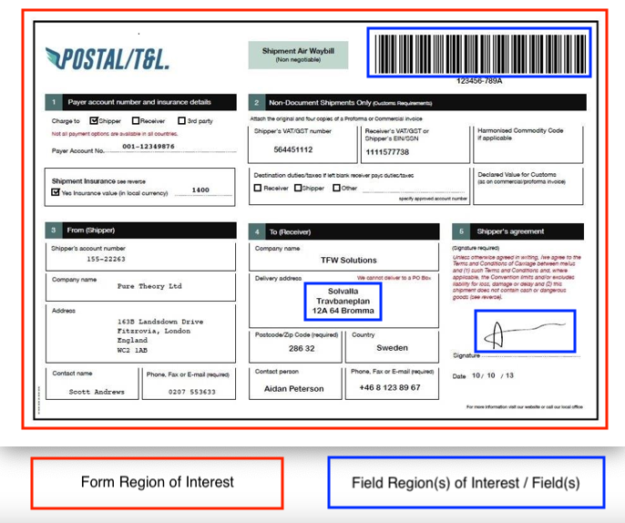
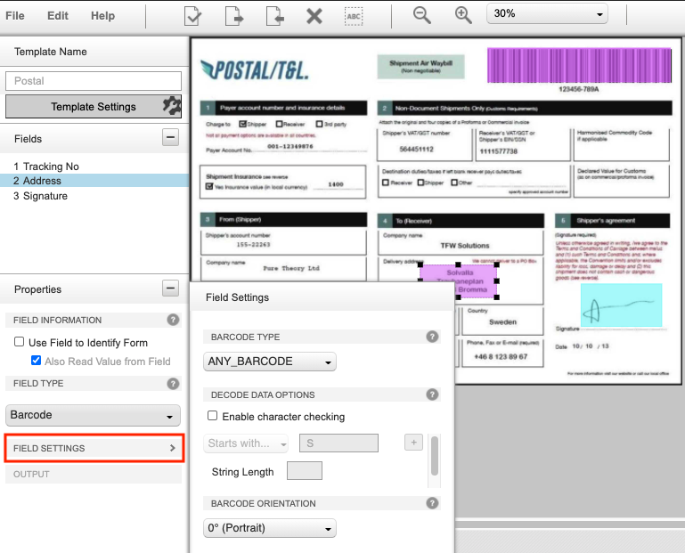
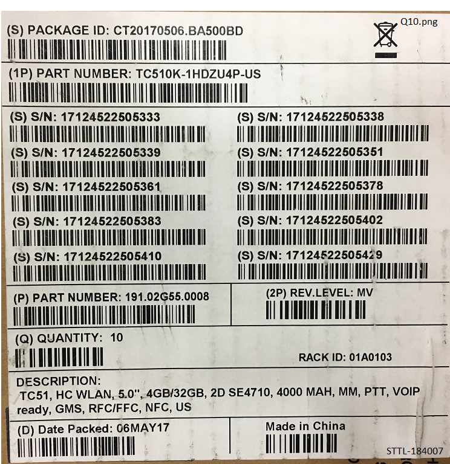
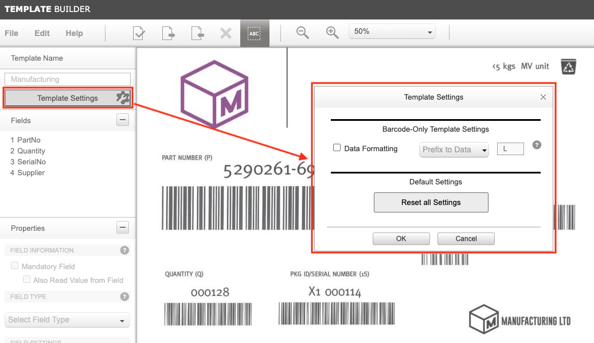
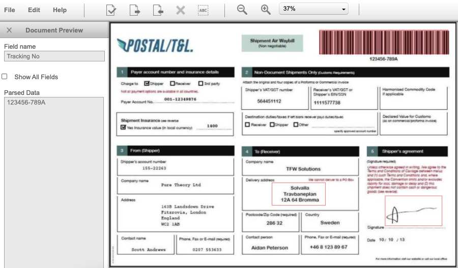

概要
テンプレート ビルダは、NG SimulScan テンプレートを作成するための Web ベースのツールで、ドキュメント、フォーム、ラベルから取得した情報を定義し、複数の画像領域とバーコードのキャプチャを簡素化します。DataWedge のドキュメント キャプチャは、定義されたテンプレートに基づいてデータを取得し、データを処理してアプリケーションに配信します。各テンプレートは、ワークフローの一部としてキャプチャおよび処理するターゲット ドキュメント (積荷受領証、部品ラベルなど) に対応します。このガイドでは、テンプレート ビルダを使用してテンプレートを作成して、デバイスに展開する手順を説明します。
要件
- カメラまたはサポート 2D イメージャ
- NG SimulScan にアクセスするように設定されている DataWedge v8.0.28 以降
- TC21 や TC26 などの Zebra Professional デバイスでは、NG SimulScan のドキュメント キャプチャ機能に Mobility DNA ライセンスが必要です
前提条件
テンプレートを作成するには、以下が必要です。
- テンプレートを作成するドキュメントのサンプル (フォーム、ラベルなど)
- それらのドキュメントの写真または画像スキャン (アップロード用)
- テンプレート ビルダ Web サイトのアカウント
- テンプレートの DataWedge プロファイルの [スキャナ選択] で [カメラ] または [2D イメージャ] が選択されていること
- テンプレートの概念に精通していること
テンプレートについて
取得タスクのほとんどは、印刷されたドキュメント、フォーム、ラベルからデータを取得するものです。こうした「ターゲット」ドキュメントのサイズ、形状、レイアウトは通常ばらばらで、正確なデータの取得を難しくしています。テンプレートは、対象となるドキュメントに関する情報を NG SimulScan に「教える」こと、そしてそのターゲット ドキュメントの各インスタンスのデータをスキャンおよび処理する方法を定義することによってこの問題を解決します。

対象フォーム領域と対象フィールド領域や複数のフィールドを示すサンプル ドキュメント
テンプレートは、複数のタイプのデータを含む「ターゲット」ドキュメント (例: 出荷受領書や出荷ラベル) に関連付けられています。「対象フォーム領域」は、フォーム全体のすべてのデータを含む境界を定義します。「フィールド」は、データの抽出元となるフォーム上の具体的な「対象フォーム領域」を指定するために定義します。これらのフィールドには、バーコード、画像、署名など、さまざまなタイプのデータを含めることができます
テンプレートの生成は、次のサブセクションで説明する 2 種類のドキュメントとキャプチャしたデータに基づいて行われます。
- イメージ キャプチャ - バーコードとデータの画像 (テキスト、画像、署名など) をキャプチャします
- マルチバーコード - バーコードのみをキャプチャします
テンプレートは .xml ファイルとして出力され、そこには抽出データやその他のパラメータに関する詳細な情報が入っています。ローカル ホストにダウンロードされない限り、テンプレートはテンプレート ビルダ サーバーに保存されます。
テンプレートは、DataWedge Mgr CSPを使用して Zebra モバイル コンピュータに一括展開され、NG SimulScan を使用するエンドユーザー アプリケーションで使用されます。
テンプレートを作成するには、以下の「テンプレート ビルダの使用方法」を参照してください。
イメージ キャプチャ
イメージ キャプチャは、スキャンするドキュメント (「ターゲット」) のレイアウトが固定されている (フォームが使用されるたびにターゲットの各フィールドのデータの場所と種類 が決まっており、フォームの新しいインスタンスごとにデータだけが変わる) 場合に、さまざまなタイプのデータ (バーコード、テキスト、画像など) を一度に取得するために使用します。NG SimulScan は、各領域とデータ タイプを一意に識別するテンプレートからフォームの領域から取得するべきデータの詳細を知ることができます。これにより、ユーザーは、各領域のデータをアプリケーションの特定のフィールドにマッピングさせることができます。
イメージ キャプチャ テンプレートは、次の目的に使用されます。
- 1 枚のフォームからバーコード、テキスト、その他のデータ タイプをスキャンする
- さまざまな種類のデータを一度に取得する (バーコード、テキスト、画像、署名など)
- フォーム全体またはフォーム上の領域 (写真、署名など) の画像をキャプチャする
- フォームに署名があるかどうかを検出する
イメージ キャプチャでサポートされているフィールド タイプは、次のとおりです。
- バーコード - 読み取り範囲内の 1 つまたは複数のバーコードをスキャンします。
- 画像 - 署名、写真、ドキュメント全体を画像としてキャプチャします。
 イメージ キャプチャ タイプ ドキュメントの例。
イメージ キャプチャ タイプ ドキュメントの例。
たとえば、郵便番号/T&L などの固定形式のフォーム (上図) を使用している企業は、キャプチャする各フィールドの位置と見つかった各フィールドの処理対象データのタイプを特定するためのイメージ キャプチャ テンプレートを作成することができます。
マルチバーコード
マルチバーコードは、バーコードがあるフォームからデータを取得するために使用されます。これは、複数のバーコードを同時に読み取る必要がある場合、または多数のバーコードから特定のバーコードを読み取る必要がある場合に適用されます。後者の場合、テンプレートを生成してフォームから特定のバーコードのみを取得し、取得したデータをアプリケーションの特定のフィールドに入力することができます。
定期的に決まったタイプのバーコードのみを読み取るように構成されたテンプレートを作成すると、スキャンのパフォーマンスとワークフローが向上します。マルチバーコードは、同一または異なるシンボル体系の多数の 1D/2D バーコードを同時に処理できますが、シンボル体系を少数に絞り込めば効率良く動作させることができます。
マルチバーコード テンプレートは、次の目的のために使用されます。
- 複数のバーコードがあるフォームからバーコードをスキャンする
- 複数のバーコードを同時にスキャンする
- 多数のバーコードの中から特定のバーコードをスキャンする
- 同一デコーダ、同一データ長、最初の 1 文字または 2 文字が同一のデータなど、共通パターンの識別に基づくバーコードを自動的にグループ化する
マルチバーコードでサポートされるフィールド タイプは、次のとおりです。
- バーコード - 読み取り範囲内の 1 つまたは複数のバーコードをスキャンします。
 異なるデータを含むマルチバーコード サンプル。
異なるデータを含むマルチバーコード サンプル。
たとえば、(上記のような) ラベルが付いた積荷を定期的に受け取る企業は、マルチバーコード テンプレートを作成して、上の行のバーコードからは部品番号とサプライヤ番号を、下の行からは受け取り数の情報をアプリケーションの対応するフィールドにマッピングすることができます。
サンプル テンプレート
サンプル テンプレートはデモとして提供されています。サンプル テンプレートを使用するには、次の手順に従います。
- サンプル テンプレートをローカル ホストにダウンロードします。
- NG SimulScan テンプレート ビルダ サイトにログインします: ng-simulscan.zebra.com。新規ユーザーの場合は、アカウントを作成します。
- 目的のサンプル テンプレートをアップロードします。テンプレート ビルダ サイトで、[ファイル] > [テンプレートのアップロード] の順にクリックします。目的のサンプル テンプレート (.XML ファイル) を参照し、[開く] をクリックします。
- 対応する画像ファイルをアップロードします。[編集] > [画像の変更] をクリックします。目的のサンプル フォームの画像ファイル (.JPG ファイル) を参照し、[開く] をクリックします。
これでサンプル テンプレートを使用できるようになりました。テンプレート ビルダを使用するには、手順 2 から開始してフィールドを作成します。
テンプレート ビルダの使用方法
テンプレート ビルダは、Zebra パートナーおよびその他の登録ユーザーには無償で提供されます。既存の Zebra カスタマー、パートナー、および Partner Gateway にアクセスできる ISV は、既存の資格情報でテンプレート ビルダにアクセスできます。その他のユーザーは、次の手順に従って登録を行ってください。
手順の概要
テンプレートの作成手順の概要は、次のとおりです。プロセスの詳細については、以降のセクションで説明します。
- テンプレート ビルダ Web サイトにログインします。
- ドキュメント タイプを選択し、スキャンするターゲット ドキュメントの画像 (最大 5MB の .bmp、.jpg、.png、.pdf) をアップロードし、キャプチャする目的のフィールドを選択します。
- ドキュメントのフィールドと各フィールドのデータ タイプ (バーコード、画像) を特定します。
- フィールドとテンプレートの設定項目を設定します。
- テンプレートを検証して、フィールドとプロパティが正しく設定されていることを確認します。
- でき上がったテンプレートをローカル ホスト コンピュータに保存してダウンロードします。
- スキャンを実行するデバイスにテンプレートをコピーまたは展開します。
- DataWedge を構成して、アプリケーションで使用できるようにデータを設定します。
1.アカウントを作成して、ログインする
ブラウザで、NG SimulScan テンプレート ビルダのサイト (ng-simulscan.zebra.com) にアクセスします。 テンプレート ビルダのログイン画面
テンプレート ビルダのログイン画面
[サインイン] をクリックし、ログイン資格情報を入力します。
初めて登録する場合は、[サインアップ] をクリックして Zebra NG SimulScan の登録ページにアクセスしてください。プロンプトに従って無料アカウントを作成し、必要な情報をすべて入力します。アカウントを作成すると、Zebra 管理者が登録されたアドレスにログイン情報を送信します。処理には数日かかることがあるため、事前に計画を立てることをお勧めします。
2.画像のアップロードとフィールドの作成
アップロードするテンプレート用の画像は、対象となる背景の表面に平らに置き、垂直方向から撮影するようにしてください。撮影した画像には、歪みがないようにしてください。
テンプレート用の画像を次のようにアップロードします。
- ドキュメント タイプを選択します。
- イメージ キャプチャ - インスタンスによって違いがなく、さまざまなタイプのデータ (バーコード、テキスト、画像など) を含むレイアウト用です
- マルチバーコード - 複数のバーコードを同時にデコードしたり、フォーム上の複数のバーコードから特定のバーコードを読み取ったりします
- [... を開く] ダイアログが表示されます。テンプレートを作成するターゲット ドキュメントの画像を選択してアップロードします。次のパラメータを確認します。
- サポートされているファイル タイプ: .bmp、.jpg、.png、.pdf
- 最小解像度: 640x480
- 最大解像度: 6000x6000
- 最大ファイル サイズ: 5MB
- MP サイズ: 推奨されるメガピクセル サイズ - マルチバーコードでは 2MP、イメージ キャプチャでは 3MP
.pdf の場合は、ドロップダウンからページ番号を選択してください (必要な場合)。
AutoCrop 機能 (デフォルトで有効) が、ドキュメントの境界を正確に識別していることを確認します。境界の調整が必要な場合は、[AutoCrop を無効にする] をクリックして、青色の囲みがドキュメントの境界線の外側にくるように設定します。
- 完了したら、[OK] をクリックします。ドキュメントの「対象フォーム領域」が作成されます。フォームがロードされ、表示されます。
フィールドを作成する
取得するデータがあるドキュメントの各領域の上を、マウス カーソルの十字カーソルでボックスを左上隅から右下隅にドラッグして、データをキャプチャする対象フィールド領域 (フィールド) を作成します。フィールドの制限:
- イメージ キャプチャ: 最大 3 フィールド
- マルチバーコード: 最大 20 フィールド
- 自動グループ識別: マルチバーコード フィールドに自動グループ識別が設定されているフィールドがある場合は、最大フィールド数は 10 フィールドに制限されます。自動グループ識別を設定できるフィールドは 1 つだけです。複数のフィールドに設定すると、エラーが発生します。
注: バーコード領域はバーとスペースのみで、周囲の文字は入らないようにしてください。
 画像をアップロードしてイメージ キャプチャ用のフィールドを指定する例。
画像をアップロードしてイメージ キャプチャ用のフィールドを指定する例。
フィールドを作成するもう 1 つの方法は、次のとおりです。
- メニューで [編集]>[新規フィールドを作成] を選択します。フィールドの名前を入力し、対応する領域の周囲にボックスを描画します。
- [フィールド] パネルを右クリックして、[新規フィールドを作成] を選択します。フィールドの名前を入力し、対応する領域の周囲にボックスを描画します。
 [フィールド] パネルを右クリックして、テンプレートにフィールドを追加します。
[フィールド] パネルを右クリックして、テンプレートにフィールドを追加します。
3.設定項目を設定する
次の設定項目を設定します。
フィールド プロパティ - 以下の各フィールドの必須設定を入力 (または確認) します。
- フィールドの名前
- フィールド情報 - [フィールドを使用してフォームを特定する]、[必須フィールド]、[フィールドから値も読み取る]
- フィールド タイプ -バーコード、画像
- フィールド設定 - 特定の処理モード設定 (デコーダ タイプ、デコーダ データ オプション、画像調整など)。
使用可能なオプションについては、次のサブセクションで説明されており、使用できるオプションは、ドキュメント タイプによって異なります。[イメージ キャプチャ] または [マルチバーコード]。
テンプレート設定 - ドキュメント タイプに応じて、適切なテンプレート設定を選択します。イメージ キャプチャまたはマルチバーコード。データ関連の設定は、テンプレートのすべてのデータに適用されます。
設定項目を設定したらテンプレートを保存して、[ファイル] > [テンプレートを保存] を選択します。こまめに作業を保存しましょう! 画面を閉じたり、セッションがタイムアウトになったりすると、保存していない変更は失われる可能性があります。
イメージ キャプチャ フィールド設定
左端の列の [フィールド プロパティ] パネルに、選択したフィールドの [プロパティ] が表示されます。イメージ キャプチャは、最大 3 フィールドに制限されています。
フィールド情報
- フィールドを使用してフォームを特定する - フィールドをアンカー要素として指定します。これはドキュメントの一意の属性で、ドキュメントを確実に特定し、スキャナに対する相対的な方向 (上下逆など) を判断します。所定ドキュメントのアンカー要素は、会社のロゴや静的テキストなど、同じ場所に固定されます (変更しないでください)。このオプションを有効にすると、照明などのさまざまな条件でのフォームの読み取り精度が向上します。
- フィールドから値も読み取る - アンカー要素として指定されたフィールドからデータを取得するようにテンプレートを設定します ([フィールドを使用してフォームを特定する] にチェックを入れます)。デフォルトで有効になっています。
フィールド タイプ: バーコード (1 つまたは複数のバーコードのスキャンに使用)
フィールド設定:
バーコード タイプ - バーコード デコーダを選択します。適切なデコーダを選択し、他のシンボル体系をフィルタリングしてスキャンしないようにすることを推奨します。それにより、パフォーマンスが向上します。デコーダが不明な場合は [ANY_BARCODE] を選択します。デコーダを選択すると、対応するデコーダ オプションが表示されます。
文字チェックを有効にする - 次の 1 つ以上の条件に従ってバーコードを特定する場合に有効にします。
先頭文字列 - 取得したバーコード データのバーコードの先頭文字列を確認するための先頭文字列を入力します。必要でない場合は空白のままにします。
含有文字列 - at フィールドで指定したインデックス位置に指定文字列があるバーコードを特定するための文字列を入力します (インデックス 0 = 最初の文字)。
文字列の長さ - バーコード データに含まれている必要がある文字数を入力します。必要でない場合は空白のままにします。
バーコードの向き - バーコードの向きがデフォルト (0° 縦向き) 以外の向きに回転している場合は、次のいずれかを選択します。
0° (縦向き) - バーコードはフォームの右側が上です。
90° (横向き) - バーコードは左に 90 度回転しています (反時計回り)。
180° (縦向き) - バーコードは上下逆になっています。
270° (横向き) - バーコードは左に 270 度回転しています (反時計回り)。
 バーコードのイメージ キャプチャ フィールド設定。
フィールド タイプ: 画像 (署名、写真、ドキュメント全体を画像としてキャプチャするために使用)
- 署名の有無 - 手書きの署名の有無を検出します。
- フィールド設定 (画像調整):
- 選択範囲を明るくする - 画像の輝度を上げます。
- 選択範囲をシャープにする - 輪郭を明確にするために、明るい領域と暗い領域のコントラストを大きくします。
- 選択範囲を正規化する - ピクセル強度値の範囲を変更して、コントラストをはっきりさせます (光の反射でコントラストがはっきりしない場合など)
- 出力画像を圧縮する - ファイルを圧縮するパーセンテージを入力します。
- 出力: 領域の出力を回転する方向を選択します。
- 0° (縦向き) - バーコードはフォームの右側が上です
- 90° (横向き) - バーコードは左に 90 度回転しています (反時計回り)
- 180° (縦向き) - バーコードは上下逆になっています
- 270° (横向き) - バーコードは左に 270 度回転しています (反時計回り)
 画像のイメージ キャプチャ フィールド設定。
画像のイメージ キャプチャ フィールド設定。
マルチバーコード フィールド設定
マルチバーコードは、最大 20 フィールドに制限されています。[自動グループ識別] でマルチバーコード フィールドが設定されている場合、その特定のフィールドを超えて 10 個のフィールドを追加できます。自動グループ識別を設定できるフィールドは 1 つだけです。複数のフィールドに設定すると、エラーが発生します。
フィールド情報
- 必須フィールド - バーコードが、ターゲット ドキュメントに存在している必要があります。デフォルトで有効になっています。バーコードが存在する必要がない場合、このオプションを無効にします。
- フィールドから値も読み取る - 必須フィールドとして指定されたフィールドからデータを取得するようにテンプレートを設定します。
フィールド タイプ: バーコード (1 つまたは複数のバーコードのスキャンに使用)
自動グループ識別 - グループのデコード データ オプション (開始文字列や含有文字列など) を定義しなくても、同一デコーダ、データの最初の 1 または 2 文字が同一、同一文字列長などの共通パターンを検出すると、NG SimulScan がバーコードに自動的にグループ化 (n) します。グループごとに最大 10 フィールドに制限されています。共通バーコード グループの数 (n) は固定されておらず変わりますが、次の数量オプションのいずれかに従って検出を行います。
- バーコード - 読み取るバーコード数を指定する個別の必須バーコード (「数量バーコード」) が、データ バーコードとともにドキュメントに存在する必要があります。数量バーコードは文字「Q」または「q」で始まる必要があり、または、バーコードの長さは 3 桁以下の数値である必要があります。
- 結果とともに数量バーコード データを返す - スキャンしたバーコード データとともに、バーコード数が出力されます。
- 定義ユーザー/システム - テンプレート パラメータの DataWedge UI、または
common_barcode_dynamic_quantityを必要な数量に設定して DataWedge SetConfig インテント API でスキャンするバーコードの数量を設定します。
 自動グループ識別用にグループ化できる数量バーコードとバーコードを含むマルチバーコードのサンプル
バーコード タイプ - バーコード デコーダを選択します。適切なデコーダを選択し、他のシンボル体系をフィルタリングしてスキャンしないようにすることを推奨します。それにより、パフォーマンスが向上します。デコーダが不明な場合は [ANY_BARCODE] を選択します。デコーダを選択すると、対応するデコーダ オプションが表示されます。
文字チェックを有効にする - 次のオプションに従ってバーコード データのバーコードを特定する場合に有効にします。
- 先頭文字列 - 取得したバーコード データが承認されるには、指定された文字で始まる必要があります。必要でない場合は空白のままにします。「+」を使用すると、この条件に追加の文字を指定できます。いずれかの条件が満たされると、バーコードが承認されます。
- 含有文字列 - 承認されるためにバーコードに含まれる必要がある文字を指定します。「+」を使用すると、この条件に追加の文字を指定できます。いずれかの条件が満たされると、バーコードが承認されます。
- At - 指定した文字の検索を開始する位置を示すようにインデックスを指定します。インデックスは 0 ベースで、文字列の最初の文字はインデックス 0 になります。
- 文字列の長さ - バーコード データに含まれている必要がある文字数を入力します。必要でない場合は空白のままにします。
 マルチバーコード フィールド設定。
マルチバーコード フィールド設定。
テンプレート設定
[テンプレート設定] パネルは、フォーム識別子、出力、画像補正など、通常テンプレート全体に適用する設定項目を設定するために使用します。
[テンプレート設定] パネルには、次のようにしてアクセスします。
- テンプレート ビルダ Web サイトにログインします。
- 設定の調整が必要なテンプレートを開きます。
- [テンプレート設定] をクリックするか、上のメニューで [編集] > [テンプレート設定] を選択します。
- テンプレートのドキュメント タイプごとに、必要に応じて次の説明に従って設定項目を調整します。
イメージ キャプチャ テンプレート設定
- フォーム識別子 - 次の項目の有無に基づいて、フォームの識別方法を指定します。
- 枠線 - 囲まれた枠線がフォームにあるかどうかを検出します。枠線があれば、フォームの内容が囲まれます。フォームに、4 辺すべてを囲む黒色の境界線があるか、対照的な背景で縁取られている必要があります。そうでない場合はドキュメントを読み取れません。
- アンカー バーコード - アンカー バーコードの有無を検出します。同一フォームの決まった位置にあるさまざまなタイプのバーコードのことです (ただし、データはさまざまです)。フォームのその他のフィールド (署名、住所など) は、トリミングされて出力されます。
- フォーム全体を出力 - 抽出したデータとともに、フォーム全体を画像として出力します。このオプションを有効にすると、スキャン パフォーマンスに影響します。
- 正規化する - フォーム全体を出力する前に、ピクセル強度値の範囲を変更して、コントラストをはっきりさせます (光の反射でコントラストがはっきりしない場合など)。
- すべての設定をリセット - すべてのテンプレート設定をデフォルト設定にリセットします。
 イメージ キャプチャのテンプレート設定。
イメージ キャプチャのテンプレート設定。
マルチバーコード テンプレート設定
- データ形式:
- データの接頭辞 - 出力する前に、取得した各データの先頭に付加する英数字を入力します。
- データの接尾辞 - 出力する前に、取得した各データの最後に付加する英数字を入力します。
- すべての設定をリセット - すべてのテンプレート設定をデフォルト設定にリセットします。
 マルチバーコードのテンプレート設定。
4.テンプレートを検証する
テンプレート ビルダには、実際に使用する前にテンプレート フィールドを検証して、フィールドのプロパティと設定に関する有用な情報を返す検証機能があります。
テンプレートの検証は、次のように行います。
検証するテンプレートを開き、[編集] > [テンプレートを検証] を選択します。
[検証サマリ] が表示され、次のメッセージが 1 つ以上表示されます。
フォームのデコード完了:
- テンプレートによるターゲット ドキュメントの特定が完了しました。
- ドキュメントを特定するために、2 つ以上のフィールドが「フィールドを使用してフォームを特定する」ように指定されています。
- [フィールドを使用してフォームを特定する] として指定されたバーコード フィールドは、サポートされているデコーダを使用し、その長さはサポート範囲内にあります。
- ターゲット ドキュメントのアップロード イメージはクリアで、解像度は適切です (マルチバーコードの場合は 2MP、イメージ キャプチャの場合は 3MP)。
テンプレートで特定されたキー フィールド:
- マークされた各領域に必要な属性 (名前、番号など) が見つかりました。
最終結果:
- (√) = 「完了 !」
- (X) = 「エラー !」
 成功したことを検証サマリが示しています。
成功したことを検証サマリが示しています。
検証のプレビュー
検証後、下の画像のように [プレビューを表示] ボタンをクリックするとテスト結果を確認できます。
次の画像は、検証プレビューの画像です。画像領域の任意のフィールドをクリックすると、そのフィールドによって解析されるデータが左側の列に表示されます。
 イメージ キャプチャ サンプルの検証プレビュー。
検証のトラブルシューティング
テンプレート タイプに応じて、次の理由のいずれかにより、検証プロセスが失敗することがあります。
イメージ キャプチャ テンプレート
アンカー バーコードベースのフォームの場合:
- エラー メッセージ: 「アンカー バーコードの向きが正しく設定されていません。」
推奨解決策: アンカー バーコードの向きを正しく設定します。 - エラー メッセージ: 「コンテンツが広い範囲に拡がっています。」
推奨解決策: フォーム上のコンテンツが広い範囲に拡がっている場合、アンカー バーコードが 1 つだけでは不十分な場合があます。アンカー バーコードが複数必要です。
ボーダーベースのフォームの場合:
- エラー メッセージ: 「フォームの画像が正しくトリミングされていません。」
推奨解決策: [自動トリミング] でフォームの画像が正しくトリミングされない場合は、[自動トリミング] を無効にして、画像を手動でトリミングします。
マルチバーコード テンプレート
- エラー メッセージ: 「バーコード フィールドを処理/デコードするには、画像の解像度が低すぎます。」
推奨解決策: テンプレートをデバイスにダウンロードして、物理ラベルを使用してテストします。失敗した場合は、より適切な画像解像度でテンプレートを再度作成してみてください。 - エラー メッセージ: 「1 つ以上のテンプレート フィールドが見つかりません (つまり、文字をチェックするバーコードを検索しても、見つかりません)。」
推奨解決策: フォームの各バーコードを別々にデコードして、テンプレートのすべてのルールを満たすようにしてください。1 つ以上のフィールドがないと、テンプレートは機能しません。 - エラー メッセージ: 「1 つ以上のバーコードが損傷しており、読み取れません。」
推奨解決策: モバイル コンピュータで各バーコードを読み取ることができることを確認します。検証が問題なく完了すれば、テンプレートはデバイスで正常に動作します。デバイスでバーコードを読み取れない場合は、デコードできる別のラベルを試してください。
5.テンプレートを展開する
設定項目の設定と検証が完了したら、[ファイル] > [テンプレートをダウンロード] を選択して、ローカル ホストにコピーをダウンロードします。デバイスに展開する前に、すべてのテンプレートが正しく動作するかどうかをテストすることを推奨します。
ダウンロードが完了すると、テンプレートをモバイル コンピュータ デバイスに展開できます。DataWedge Mgr CSP は、StageNow または EMM (Enterprise Mobile Management) システムがデバイスに展開するために使用する XML ファイルを生成します。以下を参照してください。
6.DataWedge の構成
次のようにして、テンプレートの DataWedge プロファイルを構成します。
- [スキャナの選択] で [カメラ] または [2D イメージャ] を選択します。
- [NextGen SimulScan 構成] を正しく構成します。
- [ドキュメント選択] に目的のテンプレート ファイルが表示されます。
- [スキャン モード] が [ドキュメント キャプチャ] に設定されています。
- 分かっている場合は、適切なデコーダ と対応するパラメータを選択すると、スキャンのパフォーマンスが向上します。
- マルチバーコード テンプレートの場合、テンプレート ビルダで自動グループ識別と定義ユーザー/システムが有効になっている場合、DataWedge は、期待されるバーコード数で設定する必要があります。[テンプレート パラメータ] を選択し、[ユーザー定義バーコード数量] を指定します。
- 必要に応じて、UPC/EAN パラメータ、リーダー パラメータなどの他のパラメータを設定します。
- アプリケーションを DataWedge プロファイルに関連付けて、データを受信できるようにします。
テンプレートを使用する準備ができました。『「コンテンツ プロバイダの使用」プログラマ ガイド』を参照して、アプリケーションに出力できるように、取得したデータを取得して処理します。
テンプレートを修正する
読み取るドキュメントの変更への対応、ワークフローの変更への対応、フィールドからの入力に基づく設定の調整などのために、既存のテンプレートを変更することができます。
警告: テンプレート ファイルは手動で変更しないでください。テンプレートは Base64 エンコード ファイルに格納されたマシン生成の XML ファイルで、手動で編集されることを想定していません。
既存のテンプレートの変更は、次のように行います。
- テンプレート ビルダ Web サイトにログインします。
- [テンプレートを開く] ボタンをクリックするか、[ファイル] > [テンプレートを開く] を選択して、変更するテンプレートを開きます。
- 必要に応じてテンプレート設定を編集します。
- [ファイル]>[テンプレートを保存]で保存するか、[ファイル]>[名前を付けて保存 ...] で新しいバージョンを作成します。
- 上記の説明に従って、テスト、検証、展開を行います。
関連ガイド: